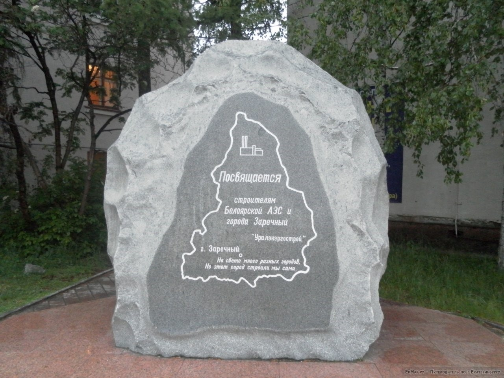

Атомград - связь поколений
Заречный – удивительный город, созданный смелыми, трудолюбивыми, грамотными, увлеченными людьми. На памятном камне первостроителям Заречного есть надпись: «На свете много разных городов, но этот город строили мы сами». Из густого леса Заречный стал «Жемчужиной Урала» и центром атомной промышленности благодаря трудовому подвигу, неравнодушию, профессионализму его основателей. Сегодня в городе находится Белоярская атомная станция с известным на весь мир реактором на быстрых нейтронах.

Новому поколению Заречного предстоит совершить свой трудовой подвиг – возвести и запустить мощный энергоблок БН-1200. Опыт поколения предыдущего может быть очень полезен, ведь память о значимых деятелях Заречного — это не только дань истории, но и живой пример для вдохновения, накопленный опыт, лучшие традиции, настоящий профессионализм.
Ниже вы найдете алфавитный указатель ключевых деятелей Заречного из атомной и связанной с ней сферы, области образования и спорта, городского управления, культуры, защиты Родины. По ссылке вы можете перейти к краткому очерку о каждом деятеле. Сразу хотим предупредить, у наших героев очень богатая трудовая биография, здесь представлены лишь ключевые моменты жизни и труда.
Проект организован Уральским технологическим колледжем (филиалом НИЯУ МИФИ) в сотрудничестве с Краеведческим музеем при поддержке Администрации и Управления образования ГО Заречный, Белоярской АЭС.
Команда проекта: Наталья Зеркалий, Наталья Потапова, Людмила Бучельникова, Евгений Олейников-Мендрух, Евгений Дружинин, Джамшед Акрамов, Полина Залевская, Ульяна Копычева, Екатерина Кирякова, Михаил Солдатов, Тимур Уразманов.
Если вы нашли какие-то ошибки или несостыковки, пожалуйста, напишите нам - zerkalnaia@mail.ru Также, если вы не нашли важного деятеля Заречного, можете предложить нам добавить кого-то в базу данных.